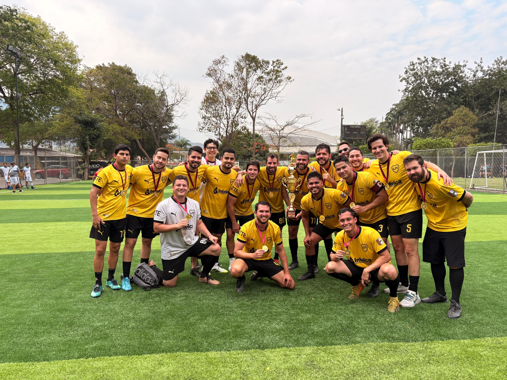

David Alejandro Torres Torres
Mechatronics Engineer · Swarm Robotics (CoRAL Lab / ESPOL) · International Research Collaborations
About Me
Mechatronics Engineer and researcher at CoRAL Lab (ESPOL), focused on swarm robotics and decentralized collective behavior. I build simulation-to-real pipelines, collaborate internationally, and bring hands-on industrial automation experience — all driven by a long-term vision of seamless human-robot coexistence.
- Swarm robotics research — CoRAL Lab / ESPOL
- International collaborations — UCD (Ireland) & SKKU (South Korea)
- Industrial automation — PLC, HMI, embedded systems
- Lab Technician & Teaching Assistant — mobile & articulated robotics
Research and International Collaboration
Bio-Inspired Swarm
Collaborated under the supervision of Ph.D. Christian Tutiven (CoRAL Lab) and Ph.D. David Garzon Ramos (UCD) in the design of a modular robotic actuator and decentralized behaviors for collective manipulation.
Navigation Pipelines
Worked with Ph.D. Nabih Pico at SKKU (South Korea) within the RISE Lab to develop and benchmark Nav2-based architectures and perception pipelines using LiDAR and depth cameras.
Multi-Fidelity Sim
Deep knowledge in building simulation-to-control infrastructures using ARGoS for large-scale swarm experiments and ROS/Gazebo for physically grounded robot embodiment.
Core Competencies
Through these international projects, I have mastered rapid prototyping (3D printing), complex system simulation, and cross-border teamwork.
Research Interests
Swarm Intelligence
Decentralized multi-agent coordination for collective manipulation and construction-oriented tasks. Bio-inspired emergent behaviors without central control.
Autonomous Navigation
SLAM-based localization, Nav2 architectures, and benchmarking local planners (MPC, MPPI, DWA) for navigation in dynamic, unstructured environments.
Sim-to-Real Transfer
Multi-fidelity simulation pipelines (ARGoS + Gazebo/ROS) to validate robot behaviors before physical deployment.
Cyber-Physical Systems
Bridging research robotics and industrial automation — IIoT, PLC integration, and safety-critical system design.
Publications & IP
Modular Robotic Platform and Manipulation System for Swarm Construction Robots
IP Filing · 2025Co-inventor on a swarm robotic platform designed for collective manipulation and construction tasks. Primary contributions focused on the mechanical design and CAD modeling of the robot base — structural layout, component integration, and overall system architecture of the mobile platform.
CoRAL Lab, ESPOL · Industrial secret — filing stage
Thesis Manuscript
"Swarm Robotic Manipulation and Collective Transport for Construction-Oriented Tasks" — B.Sc. thesis, ESPOL 2025. Manuscript in preparation for journal submission.
Supervisors: Dr. Christian Tutiven (CoRAL/ESPOL) & Prof. David Garzón Ramos (UCD, Ireland)
Additional papers and preprints will appear here as they become available.
Latest News & Updates
Thesis Defense: Completed research on "Swarm Robotic Manipulation for Construction-Oriented Tasks".
🏆 1st Place - Roboracer Ecuador: Led the winning autonomous racing team representing ESPOL/AIROS.
Industry Training: Completed the Holcim Innovation Chair program on management and sustainability.
Beyond the Lab

Football
Champions of the Unidad Educativa Javier alumni tournament. A practice in team coordination, quick decision-making, and collective dynamics.
Trekking & Hiking
High-altitude routes in the Ecuadorian Andes. Drawn to the methodical challenge of summit approaches — patience, preparation, and incremental progress under uncertainty.